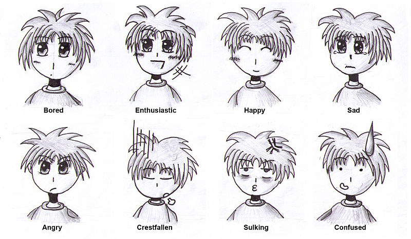

A MAPPA egy japán animációs stúdió, amelynek központja a tokiói Suginamiban található. A stúdiót 2011. június 14-én alapította Masao Maruyama, a Madhouse társalapítója és egykori producere 70 éves korában. Maruyama volt a cég első reprezentatív igazgatója, és a stúdió eredeti célja a produkció volt. Maruyama szándéka az volt, hogy a Kono Sekai no Katasumi ni (A világ ezen sarkában) című film legyen a stúdió első bemutatója, de a projekt csak 2016-ban fejeződött be. Addigra a stúdió már társproducerként elkészítette a Sakamichi no Apollon című filmet.
Az alapítóról
Masao Maruyama 1941. június 19-én született japán anime producer és anime vállalkozó, a Madhouse társalapítója, valamint a MAPPA és a Studio M2 alapítója. Jelenleg a MAPPA és a Studio M2 elnöke. Maruyama több mint 50 éve vesz részt a japán animácios üzletágban.1972-ben Maruyama otthagyta a pénzügyi válsággal küzdő Mushi Productions-t, hogy megalapítsa a Madhouse-t. 2011 júniusában Maruyama elhagyta a Madhouse-t, és 70 évesen új animációs produkciós céget alapított, a MAPPA-t.

Anime
Az anime a rajzfilm általános elnevezése Japánban.
A médium eredeti hazájában több korosztályt is megcéloz, és az élőszereplős filmekhez hasonlóan több műfajban készülnek, például romantikus, komikus, akció- és drámaanimék, sőt erotikus, pornográf tartalmúak is.
Az anime sajátos formája a mangához képest kissé késleltetve, a második világháborút követő zaklatott lelki világú Japánban alakult ki. Például számos műben megfigyelhető az atombomba gombafelhője.
A japán animáció a japán képregényművészetből vezethető le: a manga a hagyományos japán fametszetekre és papírtekercsekre rajzolt történetek és kompozíciók stílusát valamint az akkori amerikai képregénystílust ötvözte.